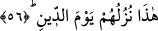
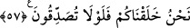

Bu âyet-i kerîmede nefsin, cehâlet ve sapıklığın kaynar suyundan içmekte ve geride
günahtan başka bir şey bırakmayan şehvet zakkumundan yemekte çok ileri gittiğine
işâret edilmektedir. Çünkü insan, açlık ve susuzluğunu arttırmaktan başka bir işe
yaramayacak şekilde son derece hırslıdır. Oysa âdemoğlunun gözünü topraktan başka
bir şey doyurmayacaktır. Şâirin dediği gibi:
Hırs tulumuna zikir nasıl sığar?
Nefes bile ayağını zorla uzatıyor.
56. İşte cezâ gününde onlara sunulacak ziyafet budur!
İşte zakkum ağacı ve yakıcı kaynar sudan zikredilenler, onların karşılaşacakları azâbın
ilk kısmıdır. Yâni gelen misâfire hemen ikram edilmek üzere hazırlanan azık gibi, onlar
için hazırlanmış azık işte bunlar olacaktır. İlk azıkları böyle olunca, onların cehennemi
yurt edindikten ve orada kalacakları kesinleştikten sonraki durumlarının nasıl olacağını
anlayabilirsin.
“Onlara elem verici bir azabı müjdele” (et-Tevbe 9/34) âyetinde olduğu gibi burada
da kâfirlerle açıkça bir istihzâ vardır. Çünkü cehennemde onlar için hazırlanacak olan
bu şeyler, kendilerine bir ikram değil, aksine cezâ olacaktır.
Âyette yer alan bu cümle, gelen âyetin muhtevâsına dâhil olmadığı halde Allah Teâlâ
tarafından özetleme yoluyla, telkin edilen kelâmın kapsamını ikrar edici olmak üzere
getirilmiştir.
57. Sizi biz yarattık. Tasdik etmeniz gerekmez mi?
Ey kâfirler, sizin, yaratma gerçeğini tasdîk etmeniz gerekmez mi? Oysa sizden sâdır
olan ameller böyle bir tasdikin olduğunu doğrulamıyor; aksine bunun tam tersini yâni
ortada tasdik diye bir şeyin olmadığını gösteriyor. Veya öldükten sonra dirilmeyi tasdik
etmeniz gerekmez mi? Çünkü, hiçbir örneği olmayan bir şeyi ilk başta yaratmaya
muktedir olan Allah, öldükten sonra yeniden yaratmaya da gücü elbette yeter.
İyi bil ki, Allah kendi yüce zâtından çoğul zamiriyle bahsettiğinde, yüce zâtına ve
sıfatları ve isimlerinden her birine işâret etmiş olmaktadır. Nitekim “Kur’ân’ı
kesinlikle biz indirdik; elbette onu yine biz koruyacağız” (el-Hicr 15/9) ve “Biz onu
(Kur’ân’ı) Kadir gecesinde indirdik.” (Kadr 97/1) âyet-i kerîmelerinde buyurduğu
gibi. Allah Teâlâ yüce zâtından tekil zamirle bahs ettiğinde ise yüceler yücesi mutlak